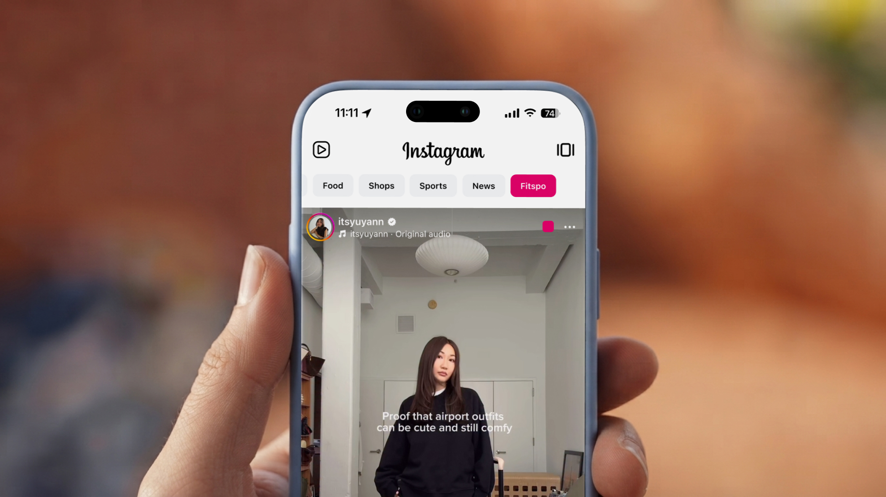
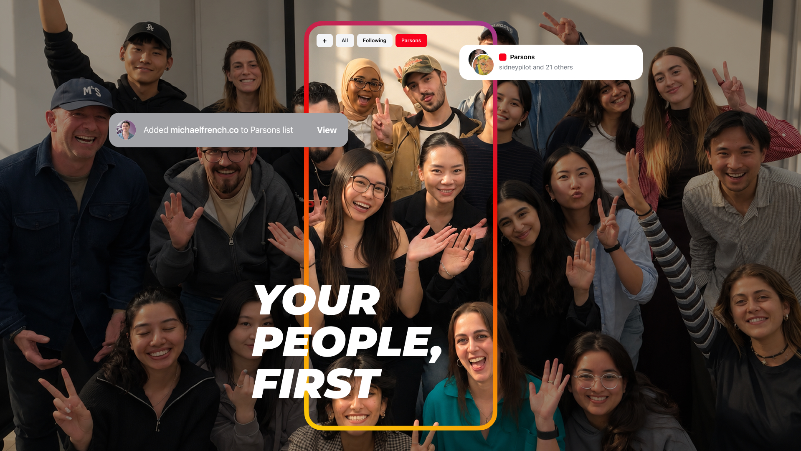
Instagram · Product design · Concept · 2025
Instagram Lists is a concept that lets people group who they follow and choose which group their feed shows first.
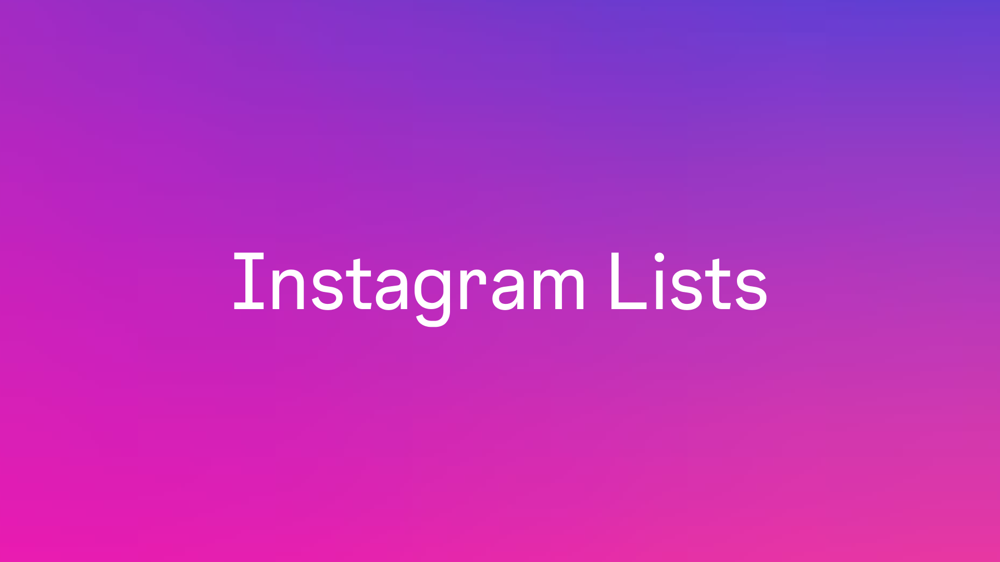
Problem
Everyone you follow competes in one feed.
Missing what matters
A single feed forces different relationships to compete for attention.
Lost after seeing
The feed optimizes for consuming content but not for rediscovering the accounts behind it.
Opportunity
How might we give users control over what their feed prioritizes in each moment without sacrificing discovery?
Solution
Choose who your feed is for. Instagram ranks inside that choice.
People pick a list, and Home, Stories, and Following all follow it. Ranking still works, just on the right pool of accounts.
Core flows
Lists live inside browsing, not beside it.
01 · Defaults
Users start with Default Lists.
New Home Navigation
Default in Following
02 · Extend
Users can then extend this system into their own relationships.
User Lists in Home
User Lists in Following
03 · Create
Creation happens where intent emerges.
Create New List
New List in Home
04 · Edit
Editing happens where intent already exists.
Edit List from Post
Edit List from Story
Edit List from Profile
Edit List from Following
Edit List directly
Research
Algorithms can predict relevance, not intent.
Takeaway 01 · Platform audits & competitive analysis
Instagram has discovery and friends, but no way to choose between them.
I audited Instagram, Facebook, TikTok, and Snapchat. Instagram covers algorithmic discovery and friend-first interaction, but viewing modes are limited and there’s no intentional content filtering. Intentional viewing was the open space.
Instagram audit
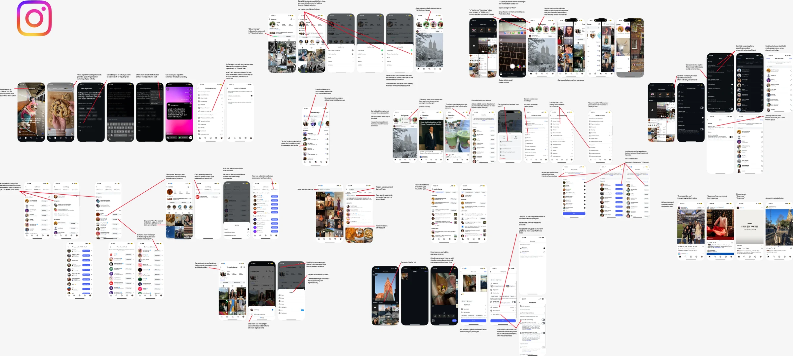
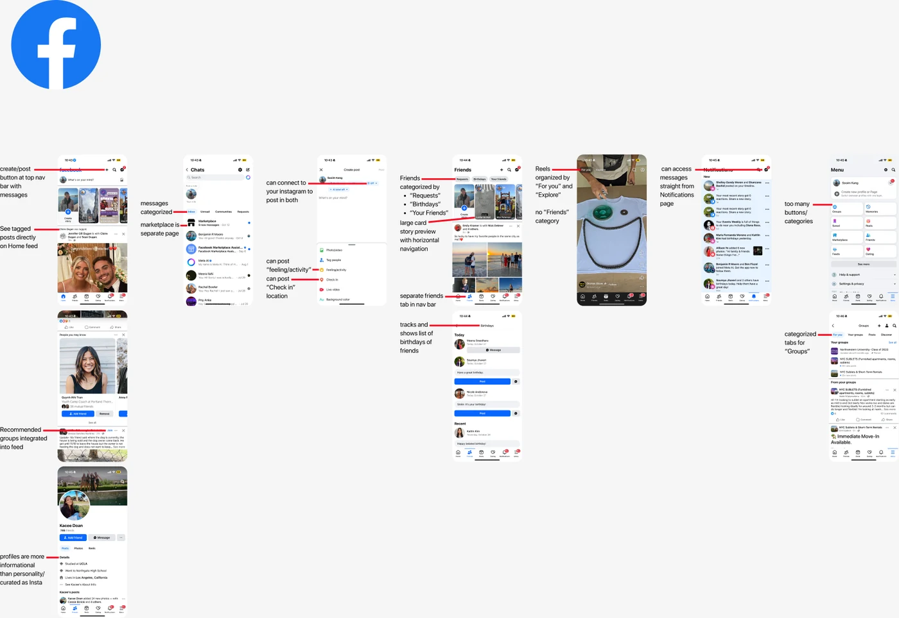
Snapchat
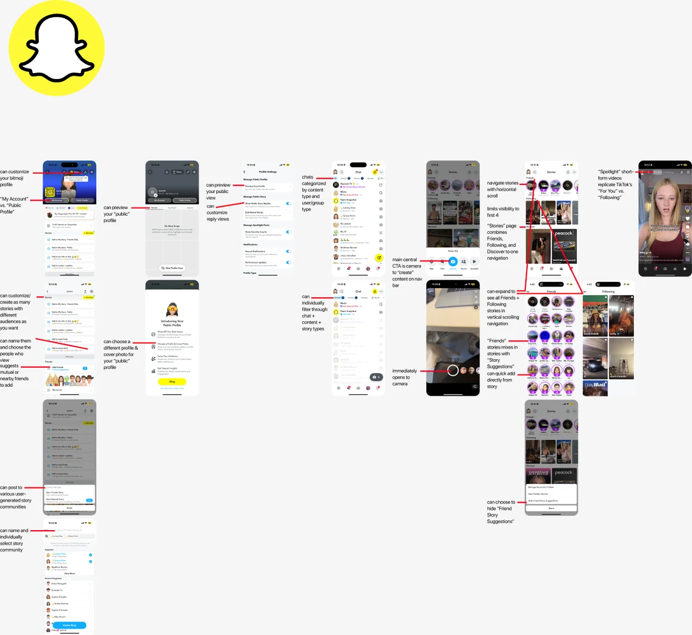
TikTok
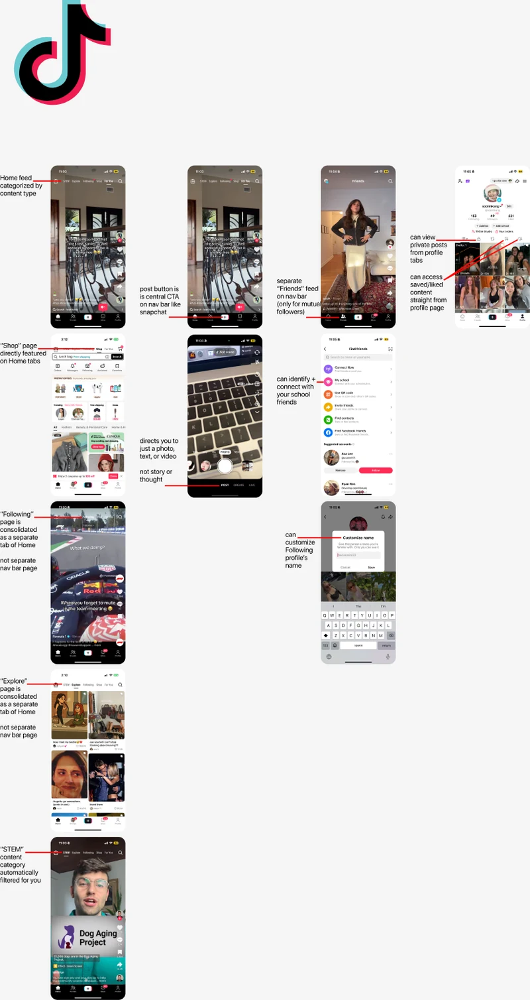
Feature comparison
| Feature | ||||
|---|---|---|---|---|
| Algorithmic discovery feed | – | |||
| Friend-first interaction | – | |||
| Separate viewing modes | – | Limited | ||
| Intentional content filtering | Limited | – | – |
Positioning
Takeaway 02 · User interviews & affinity mapping
People already sort who they follow. Instagram mixes it all back together.
Think-aloud sessions with five active users, synthesized in an affinity map. People scrolled for a long time without engaging, and described friends, school, creators, and brands as separate groups in their heads.
“After a few minutes on Instagram it just feels exhausting. There’s so much content and I don’t know what I’m supposed to pay attention to.”
“Posting on Instagram feels weird now because everything just goes to everyone. Half the time it’s random followers seeing it instead of my friends, so I don’t post as much.”
“I’ll scroll for so long but rarely stop to engage. I haven’t felt genuinely connected through Instagram in a while because I never see my actual friends on it. Just brands and influencers.”
“I already think of who I’m following in different groups—like my close friends, old school ones, and influencers or brands—but Instagram just mixes everything together.”
Affinity map
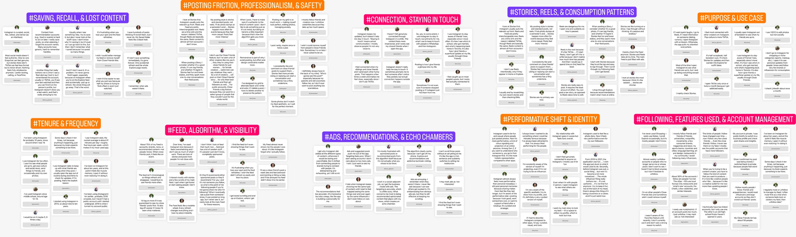
Think-aloud sessions
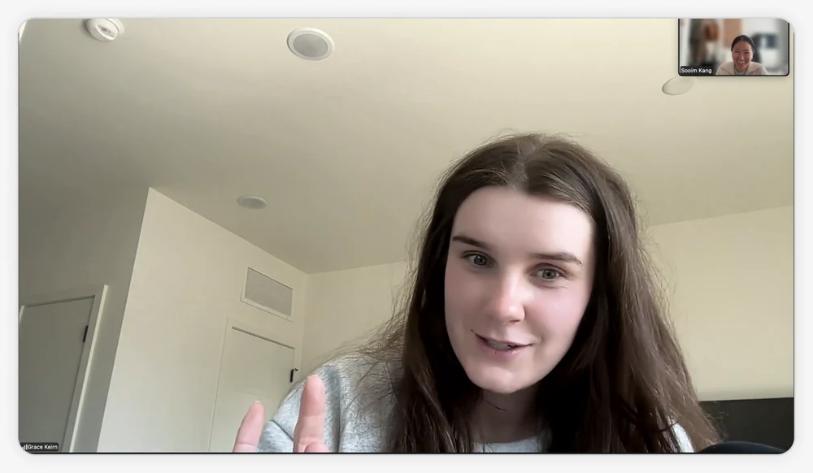
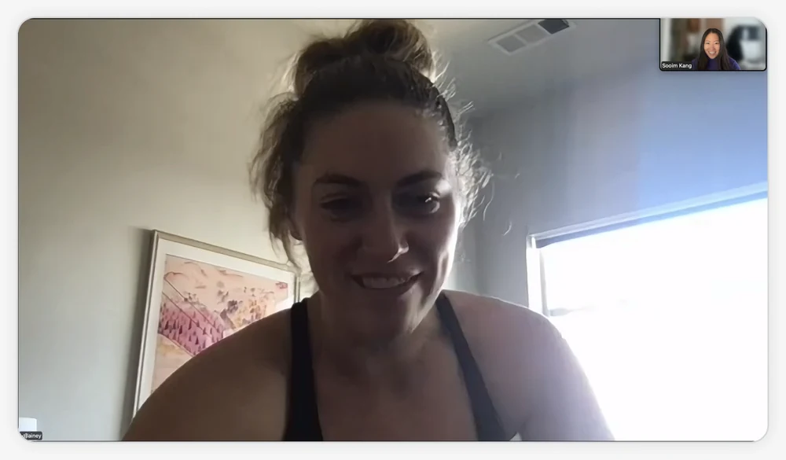
Research plan
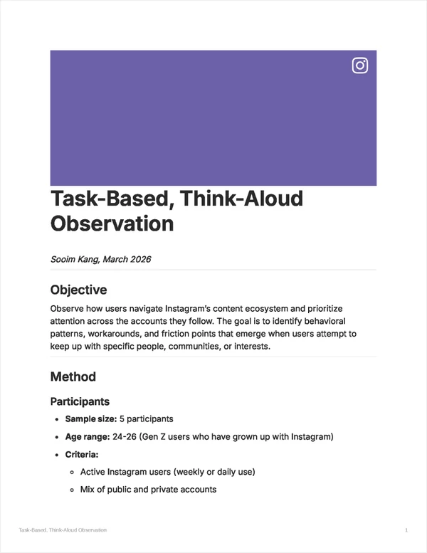
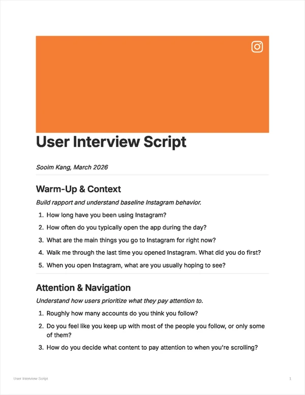
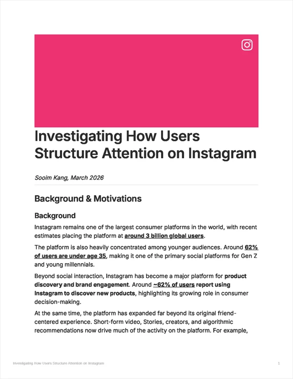
Explorations
Three directions, tested with 10 people. Only one fixed the root problem.
Navigation and profile ideas improved control, not priority. Only organizing who you follow changed what the ranking receives.

Navigation simplification
Just Seen, notifications as messages and mentions, saved posts, maps and calendar, and trending subjects, each tested with sticky-note feedback.
Outcome
Easier controls, but no way to set priority.

Profile-level curation
Public vs. private and public vs. friends profile views, so people could choose who sees what.
Outcome
Visibility control, but feed attention stayed the same.

Social graph organization
Lists in Home and Stories, Lists in Following, and a Lists page, grouping who you follow.
Outcome
Groups set feed priority before ranking. This is the direction I built.
System thinking
A new feed model: Context + Ranking
Instagram doesn’t stop ranking. People set the context first, and ranking works inside it.

Before Lists
After Lists
System mapping
Designed as a system,
not just a feature.
I prioritized with MoSCoW, mapped every surface Lists touches, and traced the journeys to create, filter, and edit a list, so one choice holds across Home, Stories, profiles, and Following.
System map

MoSCoW priorities
Must13
- Name new list from Create List
- Assign new list color from Create List
- Assign following to existing list inside existing list
- Assign following to new list from Create New List
- Create new list from Lists
- Edit existing list from Lists (color, name, following)
- Filter main Home feed by list
- Filter Stories by existing list
- Add/remove following from existing list
- Automatically create “Close Friends” list
- Show assigned list on following profile
- Filter Following by existing lists in Following
- Filter Home/Stories/Following feeds by multiple lists
Should2
- Add following to multiple lists
- Remove user from existing assigned list from Home feed post
Could3
- Remove user from existing assigned list from Stories post
- Suggest recommended lists based on following account categories
- Auto-generate a collection of users from the first few inputs
Would3
- Save posts to new/existing lists
- Filter saved posts by existing list
- Organize all following for you with AI-generated lists
User journeys

Design decisions
Native to Instagram, and private by default.
Decision 01 · System fit
No new visual language.
I started from Instagram’s own badges, icons, and buttons, tested list markers across stories, profiles, and menus, and kept only what read as native.
01Existing

02Tested

03Final

Decision 02 · Privacy
Lists only change what you see.
Sorting people is personal, so a list is visible only to the person who made it. No one is notified when they’re added, lists never show on anyone’s profile, and the people on a list see nothing different. The list markers on stories and profiles are shown only to you.
Impact & next steps
If validated, Lists could help…
Users
Focus on what matters most in each moment.
Creators
Reach the right audiences.
Instagram
Drive high-intent engagement without losing discovery.
How I’d measure it
An A/B test against today’s feed, with discovery as the guardrail.
Lists is a concept, so I’d set the measures before claiming results. The baseline comes from the research: people scrolled for a long time without engaging.
- 01
Adoption
Share of active users who switch to a list at least once a week.
- 02
Intent
Likes, comments, and replies per session on accounts in the active list, compared with the default feed.
- 03
Guardrail: discovery
Suggested posts seen and followed per session, so choosing a list never quietly cuts discovery.
Next steps
Where Lists goes next.
Reflection
When users can control each session, they stay focused on and return to what matters most to them.
I presented this case study to Ian Goode, former Head of Meta Design, and a panel with Darren Chin and my professors Sally Chung, Dana Jefferson, and Lauren Schlanger. In the mock interview, I was marked Advanced.
![Feedback quotes. Dana Jefferson, Staff Product Designer, AI Imaging at Adobe: You came across as confident and knowledgeable, with a strong perspective on your work. Ian Goode, Former Head of Design at Meta: The feature concept was a relatable, real-world idea with thoughtful product thinking behind it (the kind of brief that could genuinely live at a company like Meta). Darren Chin, Senior AI Product Manager at BCG X: Strong ability to show iterations and evolving directions throughout the process, which demonstrated how ideas develop over time.](instagram-assets/reflection/instagram-reflection-quotes.png)